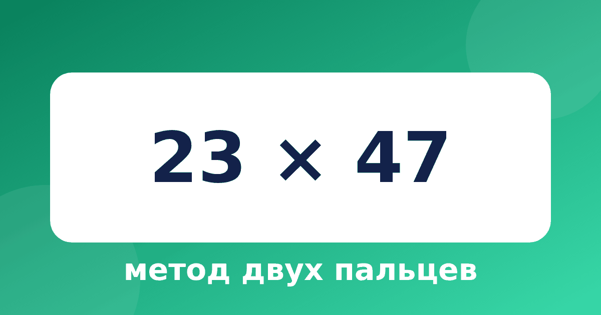

Метод двух пальцев: как умножить двузначное число на двузначное

Метод двух пальцев — самый сложный, но и самый интересный приём системы Трахтенберга. Он позволяет умножать двузначные числа, записывая только ответ. Пальцами показывают пары цифр, которые нужно перемножить, отсюда и название. Он помогает освоить умножение двузначных чисел в уме и отвечает на вопрос, как умножить двузначное на двузначное, не рисуя столбик.
Идея метода
В обычном умножении столбиком мы пишем несколько строк и складываем их. Здесь мы идём по «столбикам» ответа справа налево. В каждом столбике складываем единицы одних произведений и десятки произведений из прошлого столбика. Для двузначных чисел достаточно четырёх столбиков.
Какие пары брать
Пусть числа записаны как AB и CD. Тогда пары для столбиков такие:
- столбик 1: B × D (последние цифры);
- столбик 2: B × C и A × D (крест-накрест);
- столбик 3: A × C (первые цифры);
- столбик 4: только перенос и десятки от A × C.
В каждом столбике берём единицы произведений текущих пар и десятки произведений пар прошлого столбика. Звучит сложно, поэтому разберём на примере.
Пример: 23 × 47
- Столбик 1. Единицы: 1 (от 3 × 7). Десятки прошлого столбика: 0. Всего 1. Пишем 1.
- Столбик 2. Единицы: 2 (от 3 × 4) + 4 (от 2 × 7). Десятки прошлого столбика: 2 (от 3 × 7). Всего 8. Пишем 8.
- Столбик 3. Единицы: 8 (от 2 × 4). Десятки прошлого столбика: 1 (от 3 × 4) + 1 (от 2 × 7). Всего 10. Пишем 0, 1 запоминаем.
- Столбик 4. Единицы: 0. Десятки прошлого столбика: 0 (от 2 × 4). Перенос 1. Всего 1. Пишем 1.
Ответ 1081. Проверим: 23 × 47 = 23 × 40 + 23 × 7 = 920 + 161 = 1081.
Второй пример: 36 × 52
- Столбик 1. Единицы: 2 (от 6 × 2). Десятки прошлого столбика: 0. Всего 2. Пишем 2.
- Столбик 2. Единицы: 0 (от 6 × 5) + 6 (от 3 × 2). Десятки прошлого столбика: 1 (от 6 × 2). Всего 7. Пишем 7.
- Столбик 3. Единицы: 5 (от 3 × 5). Десятки прошлого столбика: 3 (от 6 × 5) + 0 (от 3 × 2). Всего 8. Пишем 8.
- Столбик 4. Единицы: 0. Десятки прошлого столбика: 1 (от 3 × 5). Всего 1. Пишем 1.
Ответ 1872. Проверка: 36 × 52 = 36 × 50 + 36 × 2 = 1800 + 72 = 1872.
Почему это работает
Метод двух пальцев — это то же умножение столбиком, только слагаемые из разных строк складываются сразу. Единицы и десятки каждого произведения — те самые кусочки, которые обычно записывают в разные строки. Мы их не пишем, а сразу складываем. Поэтому методу не нужны промежуточные записи, но нужна внимательность.
Когда использовать
Честно говоря, метод требует практики. Новичку он даст меньше выигрыша, чем умножение на 11 или квадрат числа на 5. Но у него есть два сильных свойства. Первое: ответ записывается сразу, без промежуточных строк. Второе: он развивает внимание и умение держать несколько чисел в голове. Если ребёнок ещё путается в обычном столбике, начните со статьи про подготовку к умножению в столбик.
Типичные ошибки
- Берут не те пары: чаще всего забывают вторую пару в среднем столбике.
- Путают единицы и десятки: берут десятки там, где нужны единицы.
- Теряют перенос или записывают двузначное число в один столбик.
- Лишний нуль в начале ответа: если в последнем столбике ноль, его не пишем.
Как тренироваться
Начните с чисел без переноса, например 12 × 21 или 13 × 32, потом переходите к примерам, где единицы и десятки появляются в каждом столбике. Для первых занятий напечатайте шаблон из четырёх клеток и подписывайте под каждой клеткой пары. В тренажёре «Быстрый счёт» модуль «Метод двух пальцев» ведёт ребёнка по столбикам: он сам пишет цифру ответа, а при ошибке видит подсказку с подробным вычислением.
Шаблон для первых занятий
Расчертите четыре клетки в ряд и подпишите их снизу: «столбик 1», «столбик 2», «столбик 3», «столбик 4». Над клетками запишите оба числа, одно над другим. Для каждого столбика ребёнок закрашивает цифры, которые нужно перемножить, одним цветом. Так пары становятся видны, и ошибки с выбором цифр почти исчезают. Через 8–10 примеров шаблон можно убрать, оставив только пальцы.
Вопросы и ответы
Подходит ли метод для трёхзначных чисел?
Подходит, но пар становится больше, и считать труднее. Для школьников достаточно двузначных чисел, а для трёхзначных обычно удобнее другие приёмы или столбик.
Нужно ли знать таблицу умножения?
Да, и хорошо. В методе много произведений однозначных чисел, поэтому уверенная таблица умножения — основа.